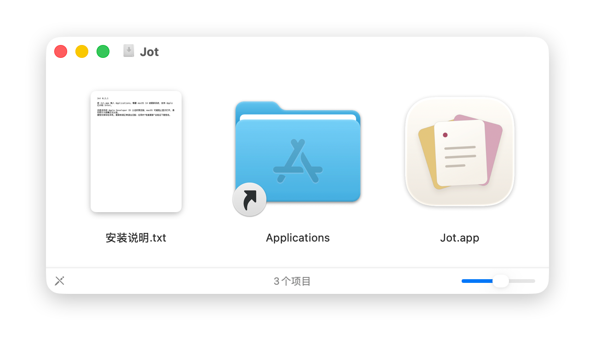
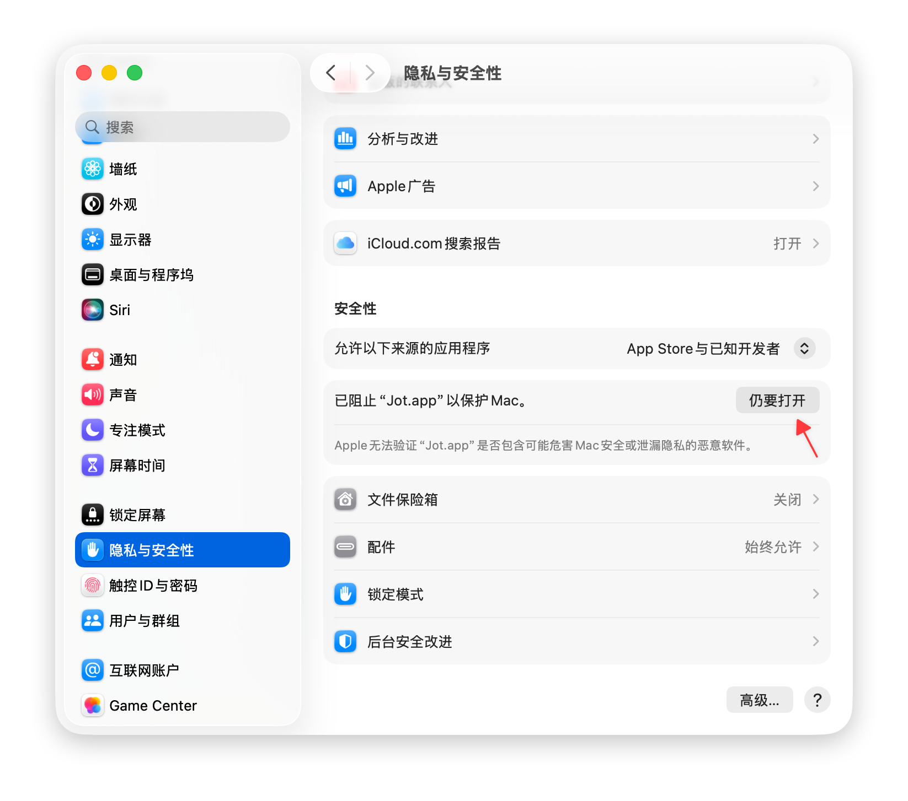

给下一个念头，留个位置
把 Jot 随记带到你的 Mac。
七页便签，随手记录。无需账号，内容保存在本机。
下载 0.2.2 预览版 DMGJot 0.2.2，更顺滑，更顺手。
从顶部拖下便签，自动进入自由移动模式；轻拉松手会回弹。点击左上角模式图标，便签吸回菜单栏后重新展开。保留关闭按钮，置顶独立控制；主题入口换成调色板，并修复三角尖角与顶部的接缝。体验窗口交互 ↗
安装只需几步
先安装，再从菜单栏打开。

安装窗口实拍 点击截图放大 ↗ 01拖入应用程序双击下载的 DMG，将右侧的 Jot.app 拖入 Applications（应用程序），再从“应用程序”打开 Jot。

隐私与安全性 · 按红箭头找按钮 点击截图放大 ↗ 02若被拦截，去这里点“仍要打开”打开 系统设置 → 隐私与安全性，向下滚动到“安全性”，找到 Jot.app 旁的 “仍要打开”，再按系统提示确认。
完成后，点击屏幕顶部的 Jot 菜单栏图标，就能开始随手记。
首次打开
找不到“仍要打开”？
当提示无法验证开发者，或 Apple 无法检查是否包含恶意软件时，仅在确认安装包来自本官网或项目官方 GitHub 版本页、且未遭篡改后，按以下步骤操作。
无需关闭 Gatekeeper、修改全局安全设置或运行终端解锁命令。不同 macOS 版本的提示文字可能略有不同。查看 Apple 官方操作说明 ↗
还有一点疑问？
没有看到“仍要打开”？
先从“应用程序”尝试打开 Jot，再查看“隐私与安全性”。受公司或学校管理的 Mac 可能不允许此操作，请联系设备管理员。如果仍无法安装，可在项目 GitHub Issues 中反馈 macOS 版本和完整提示文字。
提示“已损坏”或“将损坏电脑”怎么办？
这类提示与首次打开确认不同。请停止打开，从本页重新下载并核对 SHA-256；如果仍有提示，请向项目反馈。不要通过关闭系统防护或删除隔离属性强行运行。
安装后没有看到普通应用窗口？
Jot 是菜单栏应用。启动后请在屏幕顶部找到 Jot 图标，点击它打开便签小窗。
更新前需要做什么？
建议先导出完整备份。手动替换应用前请正常退出旧版，避免中断保存。支持应用内更新的版本也可以从菜单中检查更新。